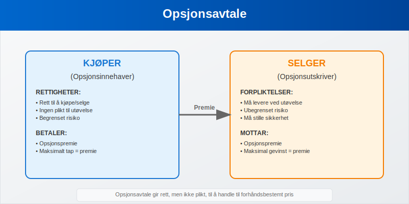
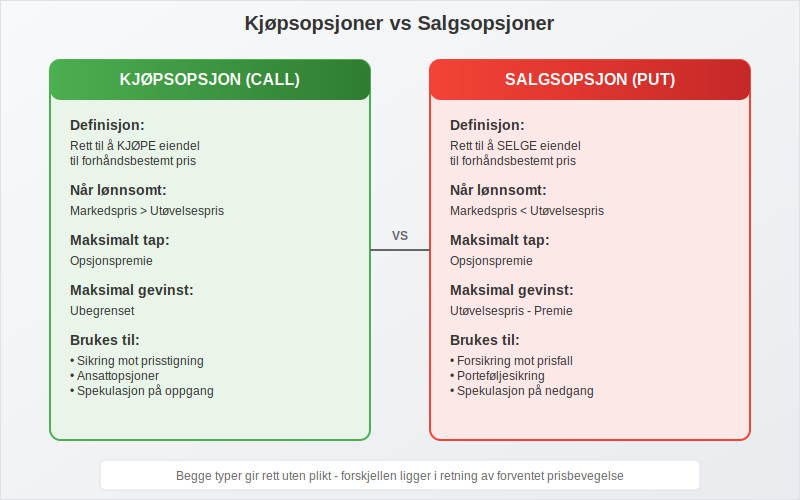
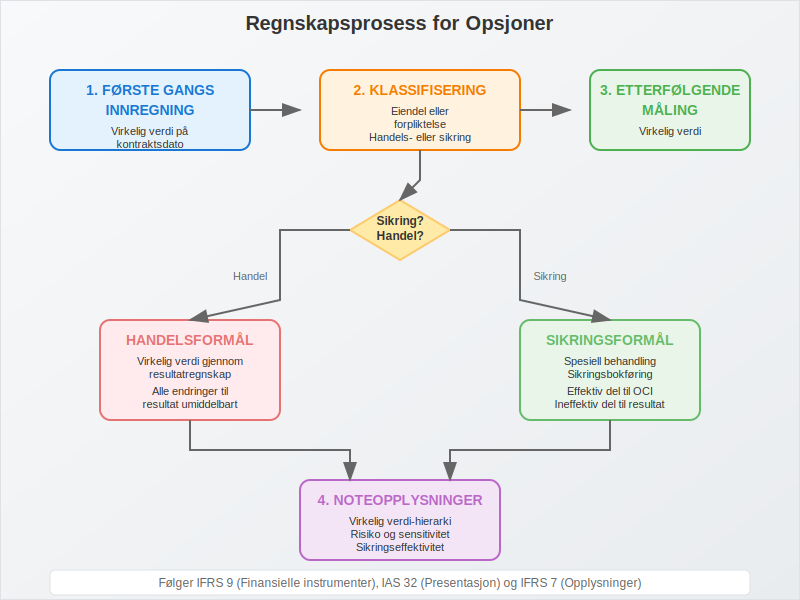
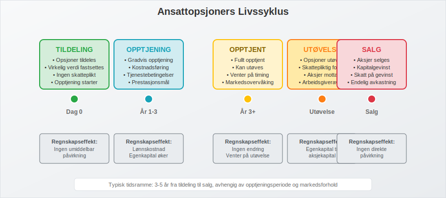
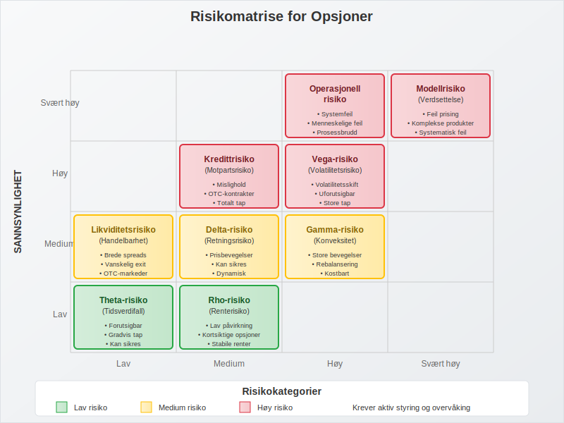
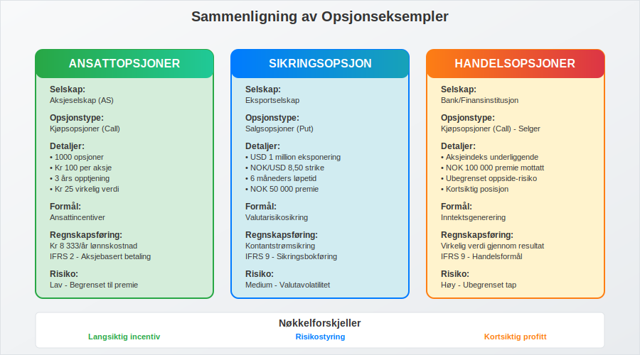
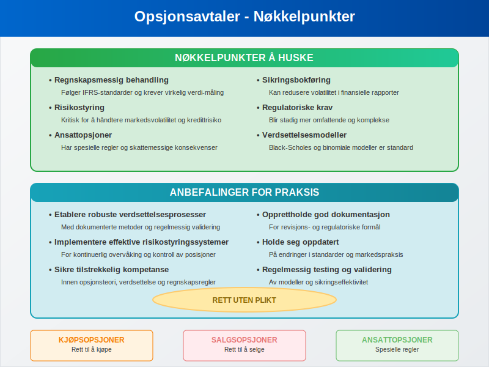

En opsjonsavtale er en juridisk bindende kontrakt som gir innehaveren rett, men ikke plikt, til å kjøpe eller selge en eiendel til en forhåndsbestemt pris innenfor en spesifisert tidsperiode. I regnskapssammenheng spiller opsjonsavtaler en viktig rolle for både verdsettelse, risikostyring og finansiell rapportering.
Opsjonsavtaler er en type derivater. Les mer om derivater i vår guide til derivater.

Definisjon og Grunnleggende Konsepter
En opsjonsavtale består av flere nøkkelelementer som definerer kontraktens vilkår og betingelser:
- Underliggende eiendel - det som kan kjøpes eller selges
- Utøvelsespris (strike price) - den forhåndsbestemte prisen
- Utløpsdato - når opsjonen utløper
- Opsjonspremie - kostnaden for å kjøpe opsjonen
- Utøvelsestype - når opsjonen kan utøves
Typer Opsjoner
Det finnes to hovedtyper opsjoner som har ulike regnskapsmessige implikasjoner:
Kjøpsopsjoner (Call-opsjon)
En kjøpsopsjon gir innehaveren rett til å kjøpe den underliggende eiendelen:
-
Innehaveren tjener når markedsprisen overstiger utøvelsesprisen
-
Maksimalt tap er begrenset til opsjonspremien
-
Ofte brukt for å sikre seg mot prisstigning
-
Vanlig i aksjeselskap for ansattopsjoner
Les mer om call-opsjoner i vår guide til Call-opsjon.
Salgsopsjoner (Put Options)
En salgsopsjon gir innehaveren rett til å selge den underliggende eiendelen:
- Innehaveren tjener når markedsprisen faller under utøvelsesprisen
- Brukes som forsikring mot prisfall
- Viktig for risikostyring i investeringsselskap
- Kan påvirke egenkapital ved utøvelse

Regnskapsmessig Behandling
Innregning og Måling
Opsjonsavtaler må behandles i henhold til IFRS 9 for finansielle instrumenter og IAS 32 for presentasjon:
Første gangs innregning
- Virkelig verdi på kontraktsdato
- Inkluderer transaksjonskostnader for ikke-handelsformål
- Klassifiseres som eiendel eller forpliktelse
- Påvirker balanse direkte
Etterfølgende måling
- Virkelig verdi gjennom resultatregnskap eller
- Virkelig verdi gjennom totalresultat (OCI)
- Avhenger av forretningsmodell og kontraktens karakteristikk
- Påvirker driftsresultat
Sikringsbokføring
Når opsjoner brukes til sikringsformål, kan spesielle regler anvendes:
- Virkelig verdi-sikring - sikrer mot endringer i virkelig verdi
- Kontantstrømsikring - sikrer mot variabilitet i fremtidige kontantstrømmer
- Nettoinvestering-sikring - sikrer utenlandske investeringer
- Krever dokumentasjon av sikringsforhold og effektivitetstesting

Verdsettelse av Opsjoner
Black-Scholes Modellen
Den mest brukte modellen for opsjonsprising inkluderer følgende faktorer:
| Faktor | Symbol | Påvirkning på Verdi |
|---|---|---|
| Aksjepris | S | Positiv for kjøpsopsjoner |
| Utøvelsespris | K | Negativ for kjøpsopsjoner |
| Tid til utløp | T | Generelt positiv |
| Risikofri rente | r | Positiv for kjøpsopsjoner |
| Volatilitet | σ | Positiv for alle opsjoner |
| Utbytte | q | Negativ for kjøpsopsjoner |
Binomial Modell
En alternativ tilnærming som er særlig nyttig for:
- Amerikanske opsjoner som kan utøves når som helst
- Eksotiske opsjoner med spesielle funksjoner
- Ansattopsjoner med opptjeningsperioder
- Situasjoner med diskrete utbyttebetalinger
Ansattopsjoner
Regnskapsmessig Behandling
Ansattopsjoner krever spesiell behandling under IFRS 2:
Måling og Innregning
- Virkelig verdi på tildelingsdato
- Kostnadsføres over opptjeningsperioden
- Påvirker lønnskostnad
- Motpost i egenkapital
Opptjeningsvilkår
- Tjenestebetingelser - ansettelsesperiode
- Prestasjonsbetingelser - spesifikke mål
- Markedsbetingelser - aksjekursutvikling
- Påvirker antall opsjoner som forventes opptjent
Skattemessige Konsekvenser
Ansattopsjoner har komplekse skattemessige implikasjoner:
- Tildeling - normalt ingen skatteplikt
- Utøvelse - skattepliktig fordel for ansatt
- Salg - kapitalgevinst eller -tap
- Arbeidsgiveravgift for foretak

Opsjoner i Ulike Bransjer
Finanssektoren
Banker og finansinstitusjoner bruker opsjoner til:
- Renterisiko-styring - sikring mot renteendringer
- Valutarisiko - sikring av utenlandske posisjoner
- Kredittrisiko - beskyttelse mot mislighold
- Handelsformål - generere inntekter
Råvarebransjen
Selskaper i råvarebransjen benytter opsjoner for:
- Prissikring - stabilisere inntekter og kostnader
- Lagerstyring - optimalisere beholdninger
- Produksjonsplanlegging - sikre råvaretilgang
- Risikostyring - redusere volatilitet i kontantstrøm
Teknologisektoren
Tech-selskaper bruker opsjoner primært til:
- Ansattincentiver - tiltrekke og beholde talent
- Oppstartsfinansiering - konvertible instrumenter
- Strategiske partnerskap - fleksible avtalestrukturer
- Vekstfinansiering - alternativ til tradisjonell finansiering
Risikofaktorer og Styring
Markedsrisiko
Opsjoner er eksponert for flere typer markedsrisiko:
Delta-risiko
- Sensitivitet for endringer i underliggende pris
- Sikring gjennom delta-nøytrale strategier
- Overvåking av porteføljeeksponering
- Påvirker avkastning direkte
Gamma-risiko
- Endringer i delta når underliggende pris beveger seg
- Konveksitetsrisiko for store prisbevegelser
- Rebalansering av sikringsposisjoner
- Viktig for risikostyring
Vega-risiko
- Sensitivitet for endringer i volatilitet
- Volatilitetsskift kan påvirke verdier betydelig
- Diversifisering på tvers av volatilitetsregimer
- Krever sofistikerte målemodeller
Kredittrisiko
For OTC-opsjoner (over-the-counter) oppstår kredittrisiko:
- Motpartsrisiko - risiko for at motpart ikke oppfyller forpliktelser
- Sikkerhetsstillelse - krav om margin eller pant
- Netting-avtaler - redusere eksponering
- Kredittvurdering av motparter

Regulatoriske Krav
IFRS-krav
Internasjonale regnskapsstandarder krever:
Noteopplysninger
- Virkelig verdi-hierarki - klassifisering av verdsettelsesmetoder
- Sensitivitetsanalyse - påvirkning av nøkkelforutsetninger
- Sikringsbokføring - dokumentasjon av sikringsforhold
- Kredittrisiko - eksponering og styring
Presentasjon
- Balanse - klassifisering som eiendel eller gjeld
- Resultatregnskap - gevinster og tap
- Totalresultat - sikringsineffektivitet
- Kontantstrømoppstilling - klassifisering av kontantstrømmer
Norske Særregler
I Norge gjelder spesielle regler for:
- Regnskapsloven - forenklede regler for små foretak
- Skatteloven - skattemessig behandling
- Verdipapirhandelloven - børsnoterte selskaper
- Finanstilsynet - tilsynskrav for finansinstitusjoner
Praktiske Eksempler
Eksempel 1: Ansattopsjoner
Et aksjeselskap tildeler ansattopsjoner:
- Tildeling: 1000 opsjoner til kr 100 per aksje
- Opptjeningstid: 3 år
- Virkelig verdi: kr 25 per opsjon ved tildeling
- Regnskapsføring: kr 8 333 per år i lønnskostnad (25 000 / 3)
Eksempel 2: Sikringsopsjon
Et eksportselskap sikrer valutarisiko:
- Eksponering: USD 1 million om 6 måneder
- Sikring: Kjøp av USD put-opsjoner
- Utøvelsespris: NOK/USD 8,50
- Premie: NOK 50 000
- Regnskapsføring: Kontantstrømsikring
Eksempel 3: Handelsopsjoner
En bank handler opsjoner for fortjeneste:
- Posisjon: Selger call-opsjoner på aksjeindeks
- Premie mottatt: NOK 100 000
- Risiko: Ubegrenset oppside
- Regnskapsføring: Virkelig verdi gjennom resultat

Fremtidige Utviklingstrender
Teknologisk Utvikling
Nye teknologier påvirker opsjonsmarkedet:
- Algoritmisk handel - automatiserte strategier
- Kunstig intelligens - forbedret prising og risikostyring
- Blockchain - desentraliserte opsjonsplattformer
- Sanntidsrapportering - økt transparens
Regulatoriske Endringer
Kommende regulatoriske endringer inkluderer:
- ESG-rapportering - bærekraftskrav
- Digitale eiendeler - kryptovaluta-opsjoner
- Klimarisiko - nye sikringsinstrumenter
- Cybersikkerhet - økte krav til datasikkerhet
Markedsutvikling
Opsjonsmarkedet utvikler seg mot:
- Økt kompleksitet - mer sofistikerte produkter
- Demokratisering - tilgang for mindre investorer
- Globalisering - grenseoverskridende handel
- Standardisering - felles markedspraksis
Konklusjon
Opsjonsavtaler representerer et komplekst, men viktig område innen moderne regnskap og finans. For foretak som benytter opsjoner, er det essensielt å forstå både de regnskapsmessige kravene og de underliggende økonomiske prinsippene.
Nøkkelpunkter å Huske
- Regnskapsmessig behandling følger IFRS-standarder og krever virkelig verdi-måling
- Risikostyring er kritisk for å håndtere markedsvolatilitet og kredittrisiko
- Ansattopsjoner har spesielle regler og skattemessige konsekvenser
- Sikringsbokføring kan redusere volatilitet i finansielle rapporter
- Regulatoriske krav blir stadig mer omfattende og komplekse
Anbefalinger for Praksis
For å sikre korrekt håndtering av opsjonsavtaler bør foretak:
- Etablere robuste verdsettelsesprosesser med dokumenterte metoder
- Implementere effektive risikostyringssystemer for overvåking og kontroll
- Sikre tilstrekkelig kompetanse innen opsjonsteori og regnskapsregler
- Opprettholde god dokumentasjon for revisjons- og regulatoriske formål
- Holde seg oppdatert på endringer i standarder og markedspraksis
Ved å følge disse prinsippene kan organisasjoner dra nytte av opsjoners fleksibilitet og risikostyringsegenskaper, samtidig som de oppfyller alle regnskapsmessige og regulatoriske krav.
